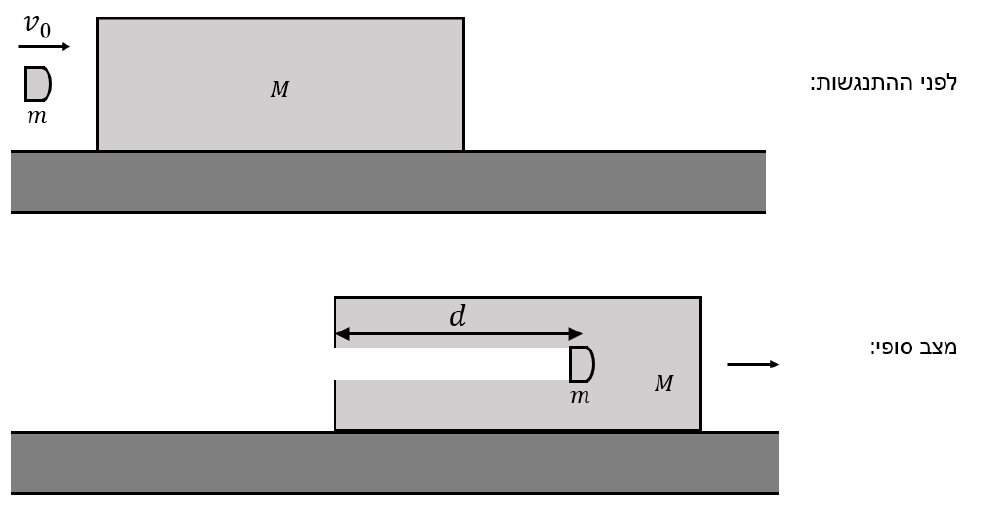
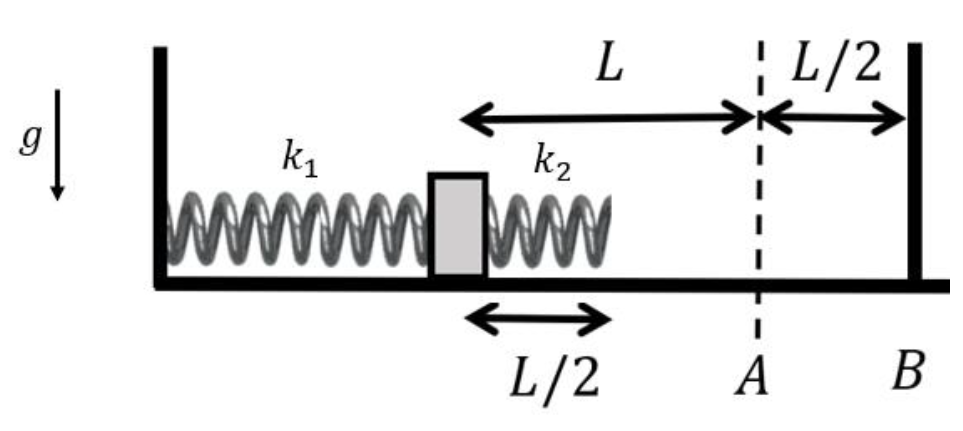
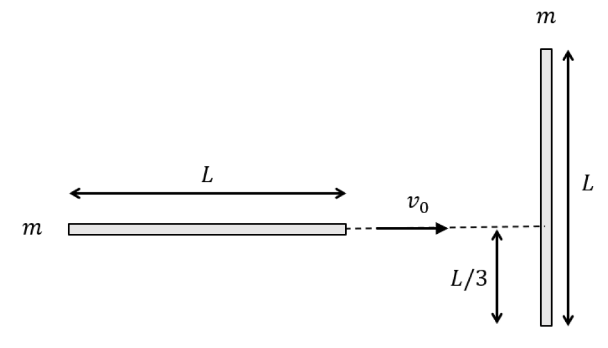
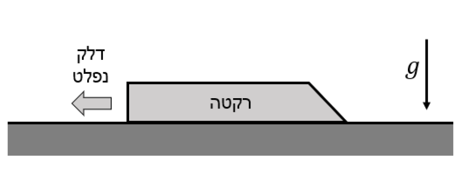
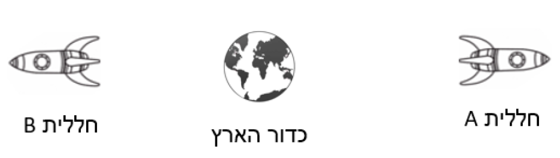

מבחן במכניקה (20215) - סמסטר 2026ב', מועד 94
שאלה 1

קליע שמסתו \(m\), הנע במהירות \(v_0\), פוגע אופקית בבול עץ שמסתו \(M\), העומד במנוחה על מישור חלק. הקליע ננעץ בבול העץ, ובסופו של דבר נעצר ביחס לבול העץ. הניחו כי במהלך התנועה של הקליע בבול העץ, על הקליע פעל כוח גרר שפרופורציונלי למהירות היחסית בין הגופים, \(F = -bu\), כאשר \(u = v_1 - v_2\) היא מהירות הקליע (\(v_1\)) פחות מהירות בול העץ (\(v_2\)), וכן הניחו כי \(b > 0\). השפעת הכבידה זניחה. הניחו כי הקליע הוא חלקיק נקודתי, וכי המסה החסרה בבול העץ זניחה.
- מה המהירות הסופית של המערכת? (5 נק')
- כתבו את משוואת התנועה עבור הקליע ובול העץ בנפרד, וממנה מצאו משוואה דיפרנציאלית עבור \(u(t)\) בלבד. (8 נק')
- מצאו את \(u(t)\). (6 נק')
- מצאו את העומק \(d\) שאליו חדר הקליע בתוך בול העץ. (6 נק')
שאלה 2

גוף בעל מסה \(m\) מוחזק במנוחה כאשר הוא מכווץ קפיץ בעל קבוע \(k_1\) בשיעור \(L\) שמאלה מנקודת שיווי המשקל שלו (נקודה A). הקפיץ מחובר בקצהו השמאלי לקיר, ובקצהו הימני לגוף. לצידו הימני של הגוף מחובר קפיץ שני, בעל קבוע \(k_2\) שאורכו הרפוי הוא \(L/2\). קצהו הימני של הקפיץ השני חופשי. כאשר הוא פוגע בקיר הימני (נקודה B) במהלך תנועתו, הוא אינו נקשר אליו אלא יכול רק להילחץ כנגדו ולהתנתק. המערכת כולה חסרת חיכוך, וידוע כי \(k_2 > 3k_1\).
- מהו פרק הזמן שיחלוף מרגע שחרור הגוף ועד שיגיע לנקודה הקרובה ביותר לקיר הימני (נקודה B)? (7 נק')
- מהו המרחק המינימלי מנקודה B שאליו יגיע הגוף? (6 נק')
- מהו גודל הכוח שמפעיל הקיר הימני על קפיץ \(k_2\) ברגע שבו הגוף נמצא במרחק המינימלי מהקיר הימני? (6 נק')
- מהו המתקף הכולל שהפעיל הקיר הימני על המערכת מרגע שחרור הגוף ועד לחזרתו הראשונה למיקומו ההתחלתי? (6 נק')
שאלה 3

מקל חד-ממדי באורך \(L\) ומסה \(m\) נע על שולחן חסר חיכוך בכיוון מקביל לאורכו במהירות \(v_0 \hat{x}\). המקל מתנגש במקל אחר, זהה ומאונך לו, המונח גם הוא על השולחן. נקודת ההתנגשות היא במרחק \(L/3\) מקצהו התחתון של המקל האנכי שהיה במנוחה. המקלות נדבקים זה לזה בנקודת ההתנגשות, וממשיכים לנוע ביחד.
- מצאו את מיקום מרכז המסה של הגוף החדש שנוצר מיד לאחר ההתנגשות. עבדו במערכת שראשיתה בנקודת ההתנגשות. (5 נק')
- מצאו את מומנט ההתמד של הגוף החדש, שנוצר סביב מרכז המסה שלו. (5 נק')
- מצאו את מהירותו הקווית של הגוף החדש שנוצר. (5 נק')
- מצאו את מהירותו הזוויתית של הגוף החדש שנוצר. (5 נק')
- נסמן את הטורק שהפעיל המוט האופקי על האנכי ביחס למרכז המוט האנכי ב-\(\tau_1\). מצאו את האינטגרל הזמני \(\int \tau_1 dt\). (5 נק')
שאלה 4

רקטה בעלת מסה כוללת \(M_0\), שמחציתה היא דלק, מתחילה ממנוחה על שולחן אופקי ארוך. מקדם החיכוך הוא \(\mu\). בזמן \(t=0\) הרקטה מוצתת ופולטת דלק בקצב קבוע \(\gamma\) ובמהירות שגודלה \(U\) ביחס לרקטה. תאוצת הכובד \(g\) פועלת כלפי מטה.
- מהו ערכו המקסימלי של \(\mu\) שיאפשר תחילת תנועה של הרקטה בזמן \(t=0\)?
- מהי המהירות המקסימלית \(v_{max}\) שאליה מגיעה הרקטה? (הניחו שהחלה לנוע)
- מהו המתקף הכולל שהפעיל כוח החיכוך מרגע ההצתה ועד שהרקטה הגיעה למהירותה המקסימלית?
- מהו הזמן הכולל שעבר מרגע ההצתה ועד שהרקטה נעצרת לחלוטין? הראו שהתוצאה אינה תלויה ב-\(\gamma\).
שאלה 5 (יחסות)

שתי חלליות יוצאות ברגע \(t=0\) מכדור הארץ, כשהן נעות בכיוונים מנוגדים על ציר ה-\(x\). מהירויות החלליות יחסית לכדור הארץ הן \(v_A = 0.8c\) (בכיוון החיובי) ו-\(v_B = -0.5c\) (בכיוון השלילי). כל המערכות מאפסות שעונים ב-\(t=0\). ברגע מסוים \(T_0\) לפי שעון כדור הארץ, שתי החלליות משחררות בו-זמנית הבזק אור חזק.
- מהי מהירותה של חללית A לפי חללית B? (4 נק')
- לפי מערכת הייחוס של חללית B, מה היה המרחק בין החלליות ברגע שבו היא שחררה את הבזק האור? (5 נק')
- לפי מערכת הייחוס של חללית A, מה היה המרחק בין החלליות בזמן שבו חללית B שחררה את הבזק האור? (5 נק')
- מתי הבזק האור ששחררה B הגיע לחללית A, לפי חללית B? (5 נק')
- ליד כדור הארץ עובר חלקיק שמסתו \(m\) ובעל תנע ימינה שגודלו \(0.5mc\) (ביחס לכדור הארץ). מהו התנע של החלקיק לפי חללית B? (6 נק')